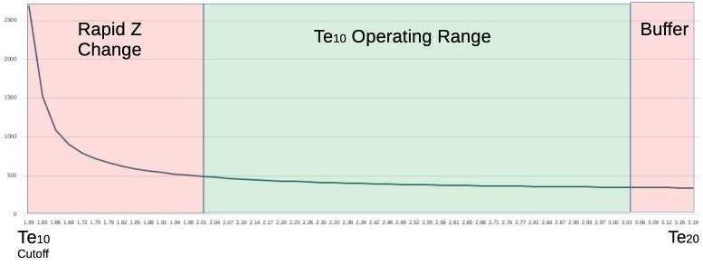
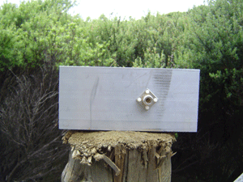
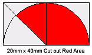

Building the Rectangular Waveguide
We used 100mm x 50mm rectangular hollow box section aluminium with 3mm thick walls
(off cuts from the 8+8 antenna).
This gives us an internal size of 94mm x 44mm. We chose to build the antenna for
2.442GHz, or channel 7, as this is close to the center of the 13 channels available
to us (US designs use channel 6 (2.437Ghz), as they have 11 channels).
I followed Rob Clark's design. I have included a key lengths calculator in the form below.
Nb.Circular waveguides (cans) use a different formulae (see Can Waveguide).
- The waveguide impedance drops rapidily from infinite at Te10 cut off, then becomes close to linear

- Te10 Cut Off is the lowest frequency the waveguide will operate at.
- At the next mode frequency, the waveguide will resonate differently, and at a different speed
(Next mode cut off is usually the Te20 mode, but if the width < 2 x Height, it becomes the Te01 mode)
- Operating Range is ~1.27 x Te10 Cut Off, up to 95% of the next mode Frequency
The low 27% of the range has a very rapidly changing impedance
Above 95% of the next mode, there is a danger of jumping to a different resonant mode.
Most texts indicate that the distance to the backshort should be 1/4λg, which would look like an open circuit, but the best SWR was 1.23:1 using a cone feed (which isn't bad).
The wire probe needs to be much shorter than a probe in free space too. Our measuremnts indicated a resonant frequency of 2.29GHz. Shifting the back short closer, pushed the resonant frequency higher.
It was found by experiment that the distance from a wire probe to the back short gave a much better SWR at 1/8th the waveguide wavelength.
This will vary slightly for different sized waveguide dimensions, as it is affected by coupling with the probe. Slightly longer than 1/8λg seems to work well,
but I need to experiment more, and I have moved to using cone feeds.
Using the cone probe, we got an SWR of 1.05:1 (blue trace), and the best distance was 1/8λg + 7.5mm (the cone radius) from the closest edge of the cone to the back short.
The image is a Smiths chart and SWR for the The target frequency was 2.442. This configuration has a wide usable bandwidth.
Methods and madness
I measured to .1mm using vernier callipers, on the assumption that errors in cutting might bring that
closer to the 1mm error mark. There are only two to make, and you can't go too wrong, the probe
(N-Socket) position and the placement of the back short (end plate).
Misc Notes
- 100mm is added to the end for mounting (included in form as the outside length).
- We made the back short (end plate) from part of a 44mm offcut (We made it an L shape to help in fixing it) and used
the callipers to measure how far down the tube it needed to go.
- The probe is a 2mm diameter copper wire soldered into an N-Socket and cut to 31mm (1/4 free space
wavelength, including the protruding bit of the N-Socket). This needs to be shorter
A conical feed is a much better probe. It had a wider bandwidth and was more forgiving during construction.
- The N-Socket is held down with nylon screws. If you use metal screws,
use stainless steal ones and keep them short so they don't protrude into the cavity.
- Water in the antenna, or spider and insects will be a problem. One suggestion is to seal around the
edges of the back short with silicone and cover the open end with a piece of plastic (microwave friendly and thin).
Tests show that different plastics detune the antenna to lower frequencies, due to the dialetric properties of the plastic.
|  |
 |
| Not very exciting, but works well out to ~2Km. (with a cone probe it was working well at 3km) |
Shows the back short mounting |
 |
 |
N-Socket with 1/4 wavelength copper wire
(including the length of the bit of the
N-Socket it is soldered into).
This becomes the probe for the antenna.
|
Shows the probe mounted. |
Cone feed


It is made from a 20mm x 40mm piece of copper and rolled into a cone. It is slightly harder to make, but it is worthwhile.

Cut the red area from the copper and roll into a cone. Solder onto an N-Connector so that the cones base will be exactly half way across the cavity.
Nb.The 10mm hole in the waveguide for the N connector will be too small for a cone probe. You will need to drill it out to 16mm. Do this in small increments, widening the hole one or two drill bit sizes at a time. It will make a much neater hole.
The back short needs to be the radius (~7.5mm) further back compared with a wire probe